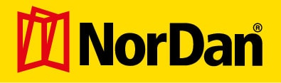
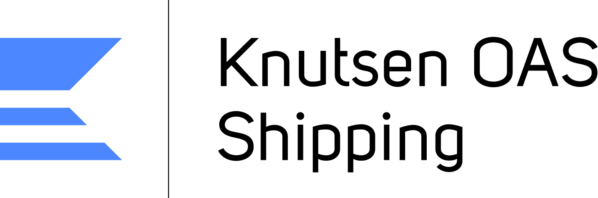

Om oss
Om InfoTech
Infotech AS ble etablert i 1993. Vår hovedvirksomhet er konsulenttjenester, rådgivning og utvikling av skreddersydde IT-løsninger. Vi har lang erfaring og er en samarbeidspartner som løser de fleste utfordringer.
Arbeidsplattform
Vår spesialisering er PC-løsninger for Microsoft Windows plattformene. Mesteparten av vår programvareutvikling er basert på Microsofts.NET teknologi med Microsoft Visual Studio.NET som det primære utviklingsverktøy. Med våre web-servere tilbyr vi tradisjonelle og skreddersydde web-tjenester.
Kontakt oss
Infotech AS
Kanalveien 105A
5068 Bergen
Telefon: 55 27 00 30
E-post:post@infotech.no
Kart
Her finner du oss
Medarbeidere

Eirik Roald Ree
Daglig leder
Utdannelse: Sivilingeniør i Datateknikk NTNU (M.Sc.)
Telefon: 55 27 00 33
Mobil: 958 45 791
E-post: eirik@infotech.no
Dag Haugen
Styreleder, økonomiansvarlig
Utdannelse: Dataingeniør
Telefon: 55270030 / 55258000
Mobil: 951 34 654
E-post: dag@infotech.no
Andreas Wie
Salgssjef
Telefon: 55 27 00 32
Mobil: 995 79 479
E-post: andreas@infotech.no
Håkon A. Fimland
Selger
Mobil: 41 00 08 58
E-post: hakon@infotech.no
Lea Sif Valsdottir
Kontor Infotech Access
Telefon: 53 51 93 52
E-post: lea@infotechaccess.se
Gry Helene Tørresdal
Koordinator
Telefon: 55 27 00 31
Mobil: 480 51 923
E-post: gry@infotech.no
Theresa Marie Sperre
Kontormedarbeider
Telefon: 55 27 00 30
E-post: theresa@infotech.no
Eivind Aksland
Systemutvikler, driftsleder
Utdannelse: Cand Mag Informatikk
Telefon: 55 27 00 30
Mobil: 918 14 308
E-post: eivind@infotech.no
Steinar Aksland
Systemutvikler
Utdannelse: Høgskoleingeniør data
Telefon: 53 51 93 22
Mobil: 918 14 309
E-post: steinar@infotech.no
Jo Inge Hjerkinn
Systemutvikler web
Utdannelse: Høgskolekandidat i IT
Telefon: 53 50 44 72
Mobil: 901 57 607
E-post: jo.inge@infotech.no
Bjørn Edvardsen
Drift og utvikling
Telefon: 55 27 00 30
E-post: be@infotech.no
Magnus Andersen
Forskning og utvikling
Telefon: 55 27 00 30
E-post: magnus@infotech.no
Kjetil Wikestad
Systemutvikler web
Telefon: 53 50 37 21
Mobil: 950 89 065
E-post: kjetil@infotech.no
Christer van der Meeren
Systemutvikler
Utdannelse: Doktorgrad i fysikk ved UiB
Telefon: 53 50 02 01
Mobil: 470 75 792
E-post: christer@infotech.no
Gustav Meyer
Tekniker, utvikling
Telefon: 55 27 00 30
E-post: gustav@infotech.no
Referanser
TERO MARINE
Tero Marine AS holder til i Bergen og er leverandør av software til shippingindustrien i Norge og internasjonalt. Infotech har i flere år bidratt med konsulent-tjenester til Tero Marines prosjekter og applikasjoner. Vi har vært med på utvikling av personalhåndteringsprogrammet TM Crew, innkjøpssystemet TM PO og nå sist deres nye hovedapplikasjon TM Master v2.

NORDAN
NorDan AS - Norges største produsent av dører og vinduer - har benyttet seg av våre tjenester i en årrekke. De siste årene har vi utviklet et omfattende system som kalles NorDan PI (produkt-integrator), som bl.a. omfatter et skreddersydd tilbuds- og ordresystem. Vi har også bidratt med intranettsider for NorDan.
LAB ENTREPRENØR AS
Infotech har levert IT-tjenester for LAB i flere år - der vi har hatt ansvar for deres lokale nettverk og oppsett av IT-utstyr på byggeplasser. Vårt system for webhotell på byggeplasser (ITBASE) ble i sin tid utviklet på oppdrag fra LAB.
KNUTSEN OAS SHIPPING AS
Infotech har bistått Knutsen OAS shipping med installasjon av datautstyr, vedlikehold og support på deres 35 skip verden over.
